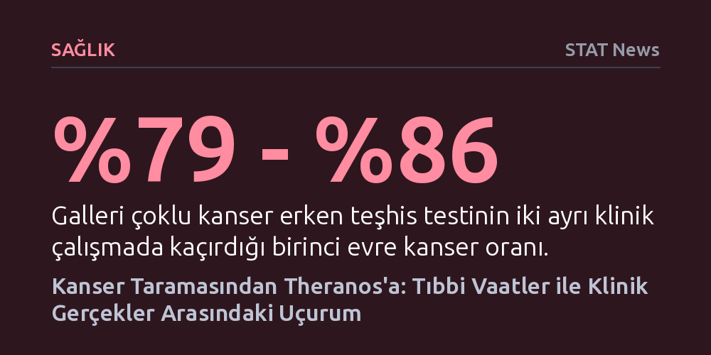

SAGLIK · STAT News · 2026-10-25
Çoklu kanser tarama testleri erken evre tümörlerin yüzde 80'inden fazlasını kaçırırken, biyoteknoloji girişimleri ve sözde enerji terapileri klinik tıbbın gerçeklerini göz ardı ediyor. Uzmanlar; kanıtlanmamış taramaların, hatalı laboratuvar modellerinin ve temelsiz alternatif tedavilerin hastalarda hayati gecikmelere ve gereksiz cerrahi müdahalelere yol açtığını vurguluyor.
Popüler sağlık teknolojilerinin ve alternatif yöntemlerin her zaman hayat kurtarmadığını; aksine bilimsel temelden yoksun tarama ve modellerin doğrudan hasta güvenliğini tehdit edebileceğini gösterir.

Çoklu kanser erken teşhis testleri biyoteknoloji dünyasında çığır açıcı vaatlerle sunulsa da klinik veriler ciddi soru işaretleri barındırıyor. Örneğin Galleri testinin klinik çalışmalarında birinci evre kanserlerin yüzde 79 ila yüzde 86'sının gözden kaçırıldığı, ikinci evre kanserlerin ise yaklaşık üçte ikisinin tespit edilemediği görülüyor. En ileri evre kanserlerde bile tespit başarısının yüzde 60-63 aralığında kalması, erken teşhis iddiasının sahadaki gerçeklikle örtüşmediğini ortaya koyuyor.
Bu durum hastalarda ölümcül sonuçlar doğurabilecek iki yönlü bir risk yaratıyor. Test sonucu temiz çıkan bireyler, yalancı bir güven hissine kapılarak vücutlarında belirtiler ortaya çıksa dahi hekime başvurmayı erteleyebiliyor. Diğer taraftan, testin hatalı pozitif sonuç verdiği sağlıklı bireylerin yarısı biyopsi, endoskopi veya cerrahi gibi gereksiz invaziv müdahalelere maruz kalıyor. Bu kişiler kanser olmadıklarını öğrenene kadar ortalama 75 gün boyunca derin bir endişe içinde beklerken, tetkik talepleri sağlık sistemini kilitliyor ve gerçek kanser hastalarının teşhis süreçlerini geciktiriyor.
Elizabeth Holmes ve Theranos skandalı çoğunlukla arızalı Edison cihazı ve kişisel bir dolandırıcılık hikâyesi üzerinden tartışılsa da başarısızlığın kökü klinik laboratuvar tıbbının işleyişinde yatıyor. Şirketin öne sürdüğü parmaktan bir damla kan alma yöntemi, sanılanın aksine rutin damar kanı alımından çok daha ağrılı bir işlem olmakla kalmıyor, klinik doğrulama süreçlerini de imkânsız hale getiriyor.
Geleneksel venöz kan alımı, tüplerde fazladan serum veya plazma birikmesini sağlar. Laboratuvarlar bu fazla numuneleri bir aya kadar saklayarak, anormal bir sonuç çıktığında veya hekim ek bir tetkik talep ettiğinde hastayı yeniden çağırmaya gerek kalmadan doğrulama testleri yapabilir. Tek damla kanda bu tekrar olanağı tamamen ortadan kalkar. Dahası, Theranos’un hekim kontrolünü dışlayan ve doğrudan tüketiciye yönelik olarak kurguladığı model, hekim tanı kodu olmadan hiçbir ödeme yapmayan sigorta temelli sağlık sistemiyle yapısal olarak uyuşmuyordu.
Bütünleştirici onkoloji alanında son yıllarda gündeme getirilen biyoalan ve enerji terapileri, kanıta dayalı tıp standartlarını karşılamaktan oldukça uzak. Reiki veya terapötik dokunuş gibi uygulamaların kanser hücrelerinin büyümesini ve yayılmasını engellediği öne sürülse de bu terapilerin temelini oluşturan varsayımsal enerji alanları, kontrollü laboratuvar koşullarında bugüne kadar hiçbir zaman tespit edilemedi.
Literatürde "Diş Perisi bilimi" olarak adlandırılan bu metodolojik tuzak, "bir fenomenin varlığı kanıtlanmadan önce o fenomen üzerinde araştırma yapmak" şeklinde tanımlanıyor. Yastık altına bırakılan paraların miktarını titizlikle ölçüp istatistik üretmek Diş Perisi'nin varlığını kanıtlamayacağı gibi, varlığı kanıtlanmamış bir biyoalan üzerine kurulan araştırmalar da anlamsızdır. Nitekim 1998 yılında JAMA'da yayımlanan klasik bir araştırma, terapötik dokunuş uygulayıcılarının iddia ettikleri enerji alanını rastlantısal şanstan daha iyi hissedemediklerini tartışmasız biçimde ortaya koymuştu.
Kronik hastalıkların yönetiminde hastaların reçete edilen ilaçları düzenli kullanmaması, sağlık personeli tarafından genellikle bilgi eksikliği veya mali yetersizliklerle açıklanır. Ancak hastaların iç dünyasında yaşanan psikolojik çatışmalar çoğu zaman gözden kaçırılıyor. Ömür boyu ilaca bağımlı yaşama zorunluluğu, hastalar için sadece biyolojik bir tedavi değil, kendi bedenleri üzerindeki denetimi kaybetme anlamına gelebiliyor.
Örneğin kalp kapakçığı ameliyatı geçirmiş bir hastanın deneyiminde görüldüğü gibi, ilacın hayati önem taşıdığını bilmek ile bir kimyasal maddeye ömür boyu bağımlı kalmanın getirdiği kimlik değişimini ve kontrol kaybını kabullenmek aynı şey değildir. Sağlık çalışanlarının, hastaların yaşadığı bu derin psikolojik direnci anlaması ve tedaviyi sadece doz takibi olarak değil, hastanın özerkliğini gözeten açık bir diyalog olarak yürütmesi gerekiyor.